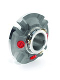
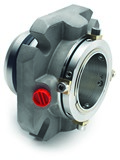
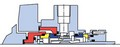
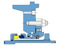
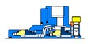

CONVERTOR II™
Convertor II™ – одинарное торцевое уплотнение картриджного типа, конструкция которого разработана для замещения компонентных уплотнений и традиционных.
Подробнее
SCUSI™
SCUSI™ – семейство торцевых уплотнений картриджного типа, конструкция которого разработана для применения на насосах с ограниченным пространством между торцевой
Подробнее
CURC™, CRCO™ И CURE™
CURC™ – является третьим поколением в технологии самоустановки. Задача была минимизировать воздействие металлической части на карбид кремния, особенно при пуске Устанавливается с внешней
Подробнее 
CSSN™ И CSSN-R™
BSAI™ – семейство компонентных торцевых уплотнений с сильфонной вращающейся частью;
ПодробнееCMAX™
CMAX™ - одинарное торцевое картриджное уплотнение разработанное специально для применения в оборудовании со значительными осевыми перемещениями вала.
типа с резиновым сильфоном.
Подробнее
СЕРИЯ P0
P0™ – семейство торцевых уплотнений компонентного типа с резиновой диафрагмой.
Подробнее
SISS™ И SISR™
SISS™ и SISR™ - семейство одинарных торцевых уплотнений предназначенных для широкого круга отраслей. Flygt.
Подробнее SMSS™
SMSS™ – семейство одинарных торцевых уплотнений картриджного типа, с подпружиненной неподвижной частью и монолитными парами трения.
Подробнее
SMSS23™
SMSS23™ - одинарное торцевое картриджное уплотнение разработанное специально для работы по API плану 23.
Подробнее
CFC™ И HPVS™
CFC™ и HPVS™ - семейства одинарных торцевых уплотнений картриджного типа, предназначенных для работы в тяжелых условиях.
Подробнее CDSA™
CDSATM – семейство двойных торцевых уплотнений картриджного типа, оптимально для герметизации вредных и опасных продуктов.
Подробнее
CDPN™
CDP™/CDPN™ - семейство двойных торцевых уплотнений для широкого спектра применений.
Подробнее
CDFI™ / CDFC™
CDFI™ – семейство двойных торцевых уплотнений картриджного типа с гибридной конструкцией, которая совмещает в себе подпружиненную вращающуюся
Подробнее
DISP™
DISP™ - семейство двойных торцевых уплотнений картриджного типа с картриджной втулкой конструктивно выполненной в виде импеллера двунаправленного действия;
Подробнее 
DMSF™ / DMSC™
DMSF™ – двойное торцевое уплотнение картриджного типа с встроенным импеллером и монолитными парами трения.
Подробнее
DMAX™
DMAX™ - двойное торцевое картриджное уплотнение разработанное специально для применения в оборудовании со значительными осевыми перемещениями вала.
Подробнее CDPH™
CDPH™ - семейство двойных торцевых уплотнений картриджного типа, предназначенных для тяжелых условий работы в среде шламовых продуктов и пульпы. Промывочные
Подробнее
CFFC™ И HPVD™
CFFC™ и HPVD™ - семейства двойных торцевых уплотнений картриджного типа, предназначенных для работы в тяжелых условиях.
Подробнее
ESM™
ESM™ – одинарное торцевое уплотнение картриджного типа для мешалок, смесителей и реакторов конструкция которого разработана для облегчения установки. Уплотнение
Подробнее
NCM™
NCM™ – одинарное торцевое уплотнение картриджного типа, разработано для мешалок, смеситилей и реакторов.
Подробнее
CSM™
CSM™ - семейство одинарных торцевых уплотнений картриджного типа для мешалок, смесителей и реакторов, конструкция которого позволяет компенсировать большее
Подробнее
CDM™
CDM™ – семейство двойных торцевых уплотнений картриджного типа для мешалок, смесителей и реакторов, конструкция которого позволяет компенсировать большее
Подробнее
CSWIB™ (MIXMASTER I™)
CSWIB™(MIXMASTER - I™) – семейство одинарных торцевых уплотнений картриджного типа с встроенным подшипником, разработано для мешалок, смесителей и реакторов.
Подробнее
DSWIB™ (MIXMASTER - II™)
DSWIB™ (MIXMASTER - II™) – семейство двойных торцевых уплотнений картриджного типа с встроенным подшипником, разработано для мешалок, смесителей и реакторов.
Подробнее
CDMSC™
CDMSC™ – семейство двойных торцевых уплотнений картриджного типа, разработано специально для установки на мешалках, смесителях и реакторах. Конструкция данного
Подробнее
MIXMASTER IV™
MIXMASTER IV™ – семейство двойных торцевых уплотнений для мешалок, смесителей и реакторов
Подробнее
MIXMASTER V™
MIXMASTER V™ - семейство двойных торцевых уплотнений для мешалок, смесителей и реакторов.
Подробнее
MIXMASTER VI™
MIXMASTER VI™ - семейство двойных торцевых уплотнений для мешалок, смесителей и реакторов.
Подробнее MIXMASTER VII™
MIXMASTER VII™ – семейство двойных торцевых уплотнений для мешалок, смесителей и реакторов.
Подробнее RDS™
RDS™ – семейство одинарных торцевых уплотнений с горизонтальным разъемом, разработано для снижения времени на установку.
Подробнее BSIV™
BSIV™ – семейство одинарных торцевых уплотнений c сильфонной вращающейся частью, разработано для легких рабочих условий.
Подробнее
BQFD™
BQFD™ - семейство одинарных сильфонных торцевых уплотнений в конструкцию которого входят элементы уплотнения BSIV™ и добавлены каналы для подвода и слива.
Подробнее
BSFG™
BSFG™ – семейство одинарных торцевых уплотнений с сильфоном, разработано специально для тяжелых условий работы, где раньше использовались эластомерные кольца из
Подробнее
BDFI™ И BDFC™
BDFI™ & BDFC™ - двойное торцевое уплотнение с гибридной конструкцией, которая совмещает в себе внутреннюю часть торцевого уплотнения BQFD™ с вращающимся сильфоном и
Подробнее
BDTP™
BDTP™ - двойное торцевое уплотнение картриджного типа гибридной конструкции со сварными металлическими сильфонами во вращающейся части внутренней и внешней
Подробнее
CVSD™/CVSD-R™
CVSD™/CVSD-R™ - семейства одинарных торцевых уплотнений картриджного типа для герметизации шламовых продуктов.
Подробнее
DSNM™ И FI-DSNM™
DSNM™/FI-DSNM™ - семейства двойных торцевых уплотнений картриджного типа для герметизации химически агрессивных продуктов.
Подробнее

FI-DSNM-R™
FI-DSNM-R™ - семейство двойных торцевых гибридных уплотнений картриджного типа, предназначенных специально для оборудования компании Richter.
Подробнее

FGDSS™
FGDSS™ - одинарное торцевое картриджное уплотнение для особо тяжелых условий работы. Предназначено для герметизации шламовых, высоковязких и абразивных
Подробнее
HDSS™/HDDSS™
HDSS™/HDDSS™ - семейство двойных торцевых уплотнений для тяжелых условий работы.
Подробнее
IASC™
IASC™ - семейство одинраных торцевых уплотнений картриджного типа для герметизации рафинёров, сортировщиков и другого оборудования целлюлозно-бумажной
Подробнее IADC™
IADC™ - семейство двойных торцевых уплотнений картриджного типа для герметизации рафинёров, сортировщиков и другого оборудования целлюлозно-
Подробнее
ISOS™
ISOS™ - пневматическое отсечное уплотнение позволяет устранить необходимость установки отсечных клапанов при замене уплотнения.
Подробнее LSEAL™
LSEAL™ - семейство двойных торцевых уплотнений картриджного типа для химически агрессивных сред.
Подробнее
PCPS™
PCPS™ - семейство торцевых уплотнений картриджного типа для винтовых насосов.
Подробнее
TPOC™
TPOC™ - семейство одинарных торцевых уплотнений картриджного типа с неразгруженной парой трения. Предназначено для герметизации вязких продуктов.
Подробнее
CAPI TYPE A ОДИНАРНОЕ УПЛОТНЕНИЕ
CAPI™ Type A- семейство одинарных торцевых уплотнений картриджного типа,разработано на высоком техническом уровне в соответствии со стандартом API 682 и отвечает всем
Подробнее
CAPI TYPE B ОДИНАРНОЕ УПЛОТНЕНИЕ
CAPI™ Type B - семейство одинарных торцевых уплотнений картриджного типа,разработано на высоком техническом уровне в соответствии со стандартом API 682 и отвечает всем
Подробнее
CAPI TYPE C ОДИНАРНОЕ УПЛОТНЕНИЕ
CAPI™ TypeC- семейство одинарных торцевых уплотнений картриджного типа, разработано на высоком техническом уровне в соответствии со стандартом API 682 и отвечает всем
Подробнее CAPI™ TXS TYPE A ОДИНАРНОЕ УПЛОТНЕНИЕ
CAPI™ TXS Type A- семейство одинарных торцевых уплотнений картриджного типа, разработано на высоком техническом уровне в соответствии со стандартом API 682 и
Подробнее
CAPI TXS TYPE B ОДИНАРНОЕ УПЛОТНЕНИЕ
CAPI™ TXS Type B - семейство одинарных торцевых уплотнений картриджного типа, разработано на высоком техническом уровне в соответствии со стандартом API 682 и
Подробнее CAPI TYPE A ДВОЙНОЕ УПЛОТНЕНИЕ
CAPI™ Type A- семейство двойных торцевых уплотнений картриджного типа, разработано на высоком техническом уровне в соответствии со стандартом API 682 и отвечает всем
Подробнее
CAPI TYPE С ДВОЙНОЕ УПЛОТНЕНИЕ
CAPI™ Type С - семейство двойных торцевых уплотнений картриджного типа, разработано на высоком техническом уровне в соответствии со стандартом API 682 и отвечает всем
Подробнее 

CAPI™ TXS TYPE A ДВОЙНОЕ УПЛОТНЕНИЕ
CAPI™ TXS Type A- семейство двойных торцевых уплотнений картриджного типа,разработано на высоком техническом уровне в соответствии со стандартом API 682 и отвечает всем
Подробнее CAPI-74™ FF-BD
CAPI-74™ FF-BD- семейство двойных торцевых бесконтактных уплотнений картриджного типа, разработано на высоком техническом уровне в соответствии со стандартом API 682 и
Подробнее